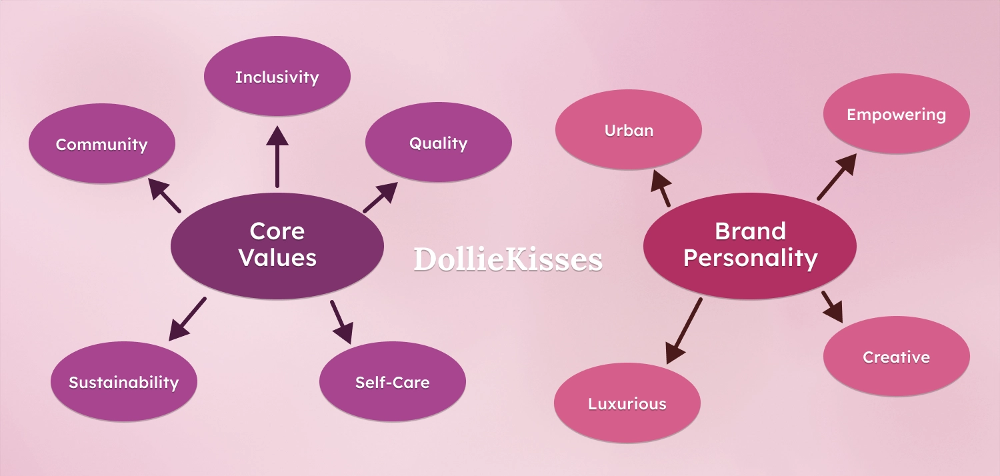

My Role:
- Branding and Design
Client:
- Dollie Kisses
Year:
- 2022
About:
This project came to me by a friend and former colleague who was starting a project establishing their own beauty, skincare, and candle line. Recognizing the need for professional design and branding assistance for their business I stepped in to provide support. Up until then, they had been crafting and producing products from the comfort of their home without the guidance of a formal designer for label creation or the establishment of a cohesive brand identity. Out of goodwill and as an opportunity to refine my skills in managing a comprehensive branding package, I contributed my expertise to elevate their company's visual presence.
Challenges:
I encountered the biggest challenge in this project while navigating the balance between the brand name itself and the target audience described by the client. Dollie Kisses, with themes naturally evoking youthful energy from the terms 'doll' and 'kisses,' posed a challenge. The client mentioned that most of their sales were to women over the age of 20, leading me to believe that the visuals and colors should lean slightly more mature and neutral to avoid the brand feeling marketed towards teenagers. Striking a balance between luxury and approachability, youthful appeal without being childish, became a constant consideration in my design process.
Work Flow:
| Interview Client | Collaboratively established brand identity and project scope with the client. |
| Pinterest & Figma | Research and creation of a mood board to help visualize likes and dislikes. |
| Adobe Photoshop & Illustrator | Developed design elements (colors, fonts, logo) and product templates, creating lifelike mockups to showcase final designs. |

Design Process
Scroll down to view the work flow process for the project.
Brand Values and Personality:
The first step for this type of project was engaging in discussions with the client to understand their vision for the company and its products. My primary focus was on comprehending the overall identity of the company, ensuring that the visual branding authentically represented its core ideas and values. While the client had not previously considered their products in this manner, we collaboratively worked on defining the target audience and constructing a brand identity that would resonate with them.
Inquiring about the client's customers revealed that they had organically cultivated a consumer base primarily through word of mouth, reaching friends, family, and coworkers. This demographic comprised predominantly adult women residing in urban areas and indicated a clientele with the financial means to invest in the products. Their preference leaned towards items associated with concepts such as self-care and relaxation, coupled with a positive reception towards the client's entrepreneurial spirit.
From the initial conversation, we established Dollie Kisses' core values, including Inclusivity, Community, Quality, Self-care, and Sustainability. These served as the foundation for formulating a brand personality aligned with those values, with descriptors such as Luxury, Creative, Empowering, and Urban chosen to encapsulate the essence of the company. This approach aimed to help me design a brand that not only reflected the company's values but also established a strong connection with its diverse customer base.

Client Mood Board:
Following the first conversation with the client, I tasked them with exploring Pinterest and advertisements to gather inspiration for products, colors, fonts, and imagery that resonated with them and reflected the established brand personality. From the compiled visuals, I curated a mood board serving as a source of inspiration for shaping the visual identity of the Dollie Kisses brand.
This exercise proved mutually beneficial, guiding the client in expressing their preferences and providing me with valuable insights. Being relatively new to conceptualizing product designs for items like cosmetics, candles, and sugar scrubs, delving into the client's mood board allowed me to explore the market landscape. I dedicated time to researching existing products, visiting websites, and gathering ideas on how other companies effectively marketed similar items.
In both my research and the client's mood board, a recurring theme emerged: the use of neutral palettes with strategic focal points, employing either a pop color or bold font to draw attention. Recognizing the effectiveness of this approach in maintaining a balance between visual appeal and simplicity, I integrated these insights into the preliminary themes for the Dollie Kisses brand. The goal was to create products that felt elegantly designed yet retained a soft and approachable aesthetic for a more inclusive consumer experience.
For the initial step, I decided to take the mood board and begin creating a color palette for the brand.

Building Brand Colors:
From the client's mood board, I sampled a selection of colors that was used in the various brands, this gave me a spectrum of neutral pinks and beiges, as well as vibrant pop colors like purple, orange, and red. Notably, the vibrant purple from a brand ad pack stood out to both the client and me. Its uniqueness appealed to the client, who appreciated the rarity of purple as a focal color in the cosmetic industry. Purple, with its connotations of luxury and creativity, also aligned with the brand personality we had earlier defined.
Although, the client and I both decided on using purple as a primary color, I felt the pop color that was sampled from the ad was a bit too youthful and Dollie Kisses could use a more sophistcated theme and so I desaturated the color and introduced more red to the hue. This resulted in a rich plum color, aptly named "Palatinate" (#681759), serving as the primary brand color. To complement this, I opted for a darker purple (#26021B) as a substitute for plain black in design, ensuring harmony within the color palette.
In addition to the primary purple colors, I selected accent colors to enhance the brand's visual appeal. A gold hue (#FFD20A) was chosen to complement the plum color and evoke a sense of wealth. A warm red, termed "Bittersweet" (#FE504F), served as a dynamic pop color in advertisements while harmonizing with the plum shade.
Thinking about the background colors, I aimed for a neutral color inspired by the prevalent pinks and beiges in other products. Considering the themes of luxury and precious metals, I decided on a desaturated rose gold color named "Timberwolf" (#E0D4D1) to provide an elegant and neutral tone suitable for packaging. With these four colors, I established a basic palette that I believed could be utilized in creating the Dollie Kisses logo and any necessary initial marketing materials and label designs.

Selecting a Font:
Choosing an appropriate font for the Dollie Kisses logo involved a process of careful consideration and elimination. The inherent challenge was finding a balance between the naturally youthful feel of the brand name and the desire to appeal to an adult audience. I explored various options, including serif fonts like Playfair, Lora, and Baskerville, as well as sans-serif fonts like Proxima Nova and Seravek. Additionally, I experimented with uppercase letters, small caps, and lowercase forms to assess their impact.
It became evident that pushing against the inherently youthful nature of the phrase 'Dollie Kisses' with skinny delicate fonts and decorative serifs clashed with the brand identity. Similarly, modern sans-serif fonts diluted the feeling of the words, resulting in too generic of an appearance. I also noticed that the capital 'D' in 'Dollie' seemed to conflict with the brand's identity, feeling too harsh, especially when stacking words for a vertical logo.
And so, I decided to keep the logo in lowercase, a choice that naturally softened the word and aligned with the playful and approachable nature of 'dollie.' I still wanted some visual impact without compromising on the brand's personality, so I leaned towards the Lora Bold font. This font struck a balance between modernity and well-balanced aesthetics, with calligraphic details in the serifs adding visual interest. Considering the established brand identity—with a color palette conveying a luxurious and creative vibe—I felt that the Lora Bold font injected an urban and empowered personality into the logo. This pairing of color and font resulted in a logo that I believed would effectively represent Dollie Kisses in its entirety.
Designing the Logo:
The client's initial request was to incorporate lips into the logo, as this imagery had been associated with their products since the start of their business. To honor this preference, I endeavored to craft a unique and brand-friendly lips logo that could serve as a distinctive symbol for Dollie Kisses in the long term.
3 Color Logo - Horizontal
The initial iteration featured a more detailed design, employing three colors to portray a realistic pair of lips. This design closely mirrored the original photograph used for the existing logo but was simplified for ease of printing and versatile design application.
1 Color Logo - Horizontal and Stacked
Alongside the three-color design, I also proposed a refined version—a single-color flat icon logo. I advocated for this concept due to its clean and timeless quality, drawing inspiration from the iconic logos of renowned brands like Giorgio Armani, Chanel, and Rolex. To highlight the versatility and widespread use of one-color logos, I presented the client with a collage of luxury brands that employ this approach to branding.
The final one-color design showcased a stylized lip icon with a unique heart-shaped pattern at the center. I believed it added a modern touch to the already chosen fonts and colors, maintaining an approachable brand image. Its simplicity and scalability made it well-suited for placement on a variety of products, accommodating the diverse shapes and containers that a small cosmetics business might employ.
Selling the Brand with Mockups:
While acknowledging that the Dollie Kisses brand primarily operates as a small business requiring stickers and labels instead of fully packaged products, I aimed to demonstrate the brand's future potential to the client. To convey this vision, I crafted product mockups showcasing how the brand's identity could be quickly integrated into a range of professional packaging that the client could envision on a store shelf.
By employing just a few of the selected brand colors, utilizing two distinct fonts (Lora and Proxima Nova), and featuring the simple one-color lip logo, the mockups illustrated the versatility and cohesiveness achievable across an entire catalog of products. This served as a persuasive tool and helped the client feel comfortable giving the go-ahead to begin designing materials based on the established brand identity.
Business Cards:
The first task I undertook for the client was designing new business cards to aid her in networking within the community. I created simple business cards using the established brand identity for Dollie Kisses, making it straightforward to incorporate the colors, fonts, and assets from the mockups
When designing the client's business cards, my main focus was on maintaining a modern and controlled aesthetic in the designs and details. The back cover was designed to stand out prominently, utilizing the primary purple color as the background and the bright gold color for the lips logo, company name, and decorative border. On the front of the card, I used the light timberwolf color in the background, and the brand purple for her personal information and created another version of the logo with white transparency to create a watermark effect. This monochromatic approach for the front aimed to convey a subtle and professional feeling, contrasting with the boldness of the back cover.
Bath Salts Labels:
These bath salt labels were the initial product I designed for Dollie Kisses. The client expressed interest in creating three blends of scented bath salts and packaging them in cylindrical containers. The first step involved measuring the dimensions of the containers and identifying a company capable of printing sticker labels for the product. Based on the container size, we opted for 2” x 6” labels that wrapped around the cylinder.
Once the size was determined, I developed a basic layout for the bath salts, featuring an eye-catching front design and a back design with space for product information. With the basic template established, I created custom artwork for each bath salt variant: Rose Dream, Lavender Glow, and Eucalyptus Uplift. After integrating the artwork into each design, I arranged four labels per page for printing as stickers.
Thanks! You've made it through my entire design process,
Click the arrow button on the right to return to the top of the page, click Portfolio to see my selected works, or click Archives and look through other projects.